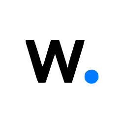
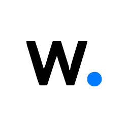

Sobre mí
Soy un Ingeniero de Sistemas apasionado por la tecnología y el software libre. Durante mi trayectoria he trabajado integrando soluciones de comunicaciones, virtualización y seguridad en entornos empresariales, siempre con un enfoque práctico y orientado a resultados.
Me caracterizo por:
- Traducir necesidades de negocio en soluciones tecnológicas claras y sostenibles.
- Documentar y transferir conocimiento para que los equipos sean más autónomos.
- Combinar herramientas open source con tecnologías comerciales para optimizar recursos.
- Mantener una visión estratégica apoyada en estándares internacionales como ISO/IEC 27001:2022.
Certificaciones & Cursos


 
